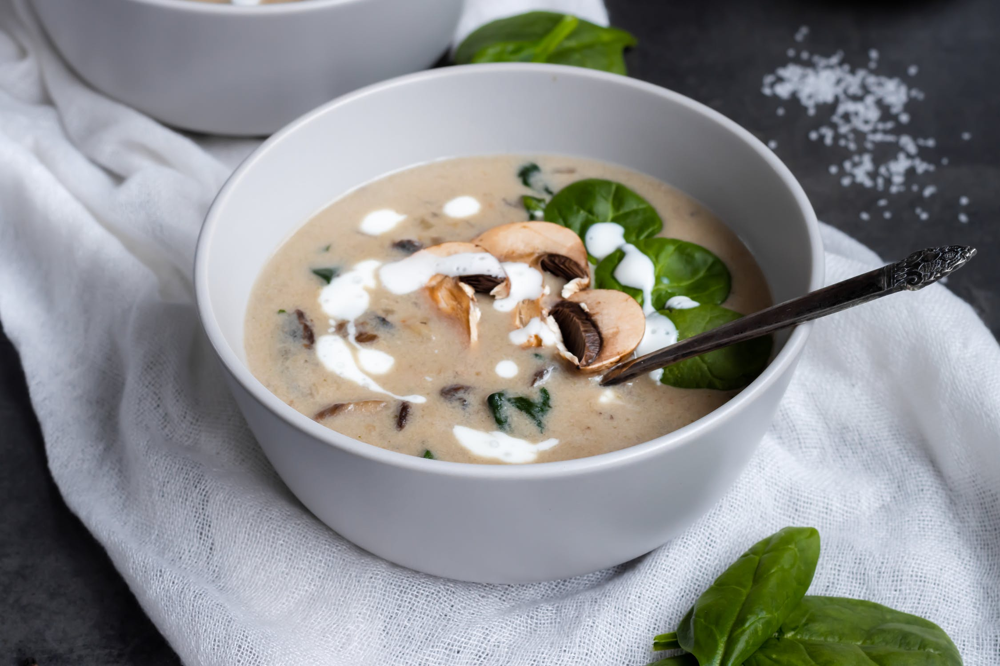

ÉTAPE 1
Préchauffer le four à thermostat 5 (150°C).
ÉTAPE 2
Faire fondre le chocolat au bain-marie avec le beurre. Lisser le mélange.
ÉTAPE 3
Ajouter à la crème de marrons en fouettant. Battre les oeufs entiers, et incorporer progressivement au mélange en remuant très vivement pour obtenir une préparation homogène.
ÉTAPE 4
Verser dans un moule à gâteau beurré et fariné.
ÉTAPE 5
Cuire entre 20 et 30 minutes (toujours à 150°C): à chacun de calibrer sa cuisson... Pour moi, il est toujours ressorti fondant du coeur jusqu'aux bords!
Quelques lamelles de truffe ou 1 filet d'huile d'olive à la truffe
ÉTAPE 1
Nettoyer les champignons et les couper en lamelles. Émincer le poireau. Peler et hacher l’oignon.
ÉTAPE 2
Faire revenir 5 minutes le blanc de poireau et l'oignon dans 25 g de beurre sur feu doux. Ajouter les champignons de Paris émincés. Verser le bouillon, saler, poivrer. Laisser frémir 20 minutes.
ÉTAPE 3
Mixer la soupe. Délayer la maïzena dans la crème liquide froide et l'ajouter à la soupe. Faire épaissir une minute à feu doux en remuant.
ÉTAPE 4
Verser le velouté dans des bols, parsemer de lamelles de truffe ou d'un filet d'huile d'olive à la truffe. et servir aussitôt.

Gratin Dauphinois
Ingrédients (pour 4 personnes):
1 kg de pomme de terre
66.5 g de buerre
1.5 gousse d'ail
2/3 l de lait
20 cl de crème
sel
poivre
muscade
ÉTAPE 1
Eplucher, laver et couper les pommes de terre en rondelles fines (NB : ne pas les laver APRES les avoir coupées, car l'amidon est nécessaire à une consistance correcte).
ÉTAPE 2
Hacher l'ail très finement.
ÉTAPE 3
Porter à ébullition dans une casserole le lait, l'ail, le sel, le poivre et la muscade puis y plonger les pommes de terre et laisser cuire 10 à 15 min, selon leur fermeté.
ÉTAPE 4
Préchauffer le four à 180°C (thermostat 6) et beurrer un plat à gratin à l'aide d'une feuille de papier essuie-tout.
ÉTAPE 5
Placer les pommes de terre égouttées dans le plat. Les recouvrir de crème, puis disposer des petites noix de beurre sur le dessus.
ÉTAPE 6
Enfourner pour 50 min à 1 heure de cuisson.